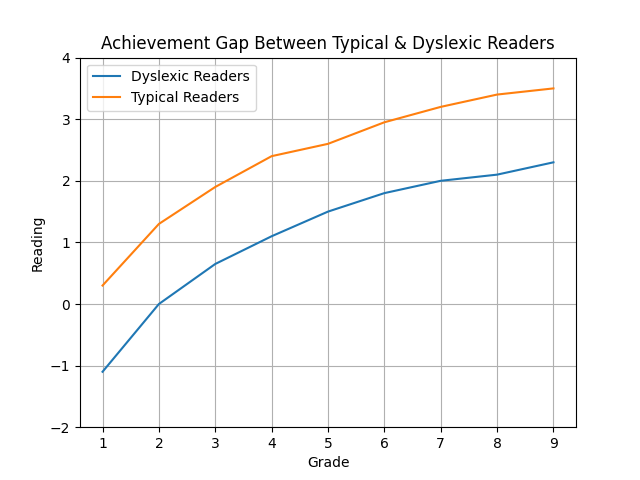
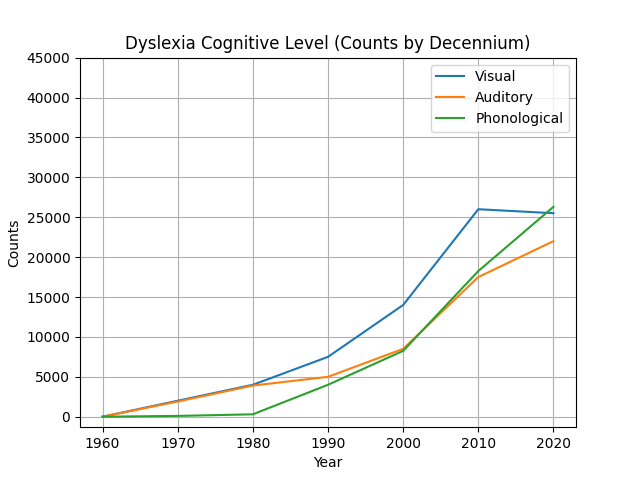

A baking platform using weight-based measurements
to make recipes more accurate, consistent, and easy to scale.
Measure baking ingredients accurately using weight-based units for more consistent and reliable results.
Access a wide range of ingredient information to help you prepare and organize your baking recipes.
Create and customize your own baking recipes while keeping ingredient measurements organized by weight.
Publish and share your baking recipes with other Gramly users and explore recipes created by the community.
Gramly highly sympathizes with dyslexic learners
or struggling individuals with their learning processes,
making it globally accessible for most, especially dyslexics.

Because of the problem above, Gramly
specializes in
visual learning which benefits both
dyslexic and typical learners.
